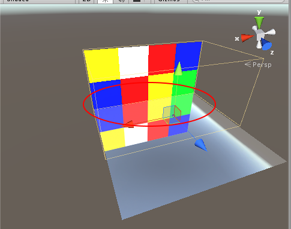
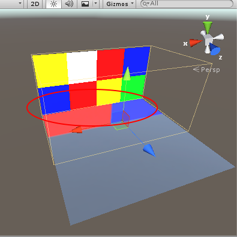

A Reflection Probe is rather like a camera that captures a spherical view of its surroundings in all directions. The captured image is then stored as a Cubemap that can be used by objects with reflective materials. Several reflection probes can be used in a given scene and objects can be set to use the cubemap produced by the nearest probe. The result is that the reflections on the object can change convincingly according to its environment.
| Property: | Function: |
|---|---|
| Type | Selects between Baked, Custom or Realtime types. |
| Property: | Function: |
|---|---|
| Dynamic Objects | Forces objects which are not marked as Static to be baked in to the probe . |
| Cubemap | Sets a custom cubemap for the probe . |
| Property: | Function: | |
|---|---|---|
| Refresh Mode | Selects how the probe will automatically refresh (re-render) in the Player. | |
| On Awake | Unity will refresh the probe only once and only when it first becomes active | |
| Every Frame | Unity will refresh the probe every frame, optionally using Time Slicing | |
| Via Scripting | Refreshing this probe will be done exclusively via a custom script. Unity will never automatically render the reflection probe. | |
| Time Slicing | Rendering a probe is a costly operation. First, Unity must render the scene from 6 different viewpoints to update its Cubemap. Then, each mipmap level of this Cubemap goes through a special blurring phase in order to support Glossy Reflections. When a realtime probe’s Refresh Mode is set to update Every Frame, this option controls how the rendering can be scheduled over several frames to reduce the impact on the framerate. | |
| All Faces At Once | All faces will be rendered at once, then over the next 6 frames, Unity will blur a face of the first level mipmap. After this, Unity will blur the remaining mipmap levels in one frame, and finally it will copy the result to the target Cubemap. Using this option, updating the probe will take 9 frames | |
| Individual Faces | Same as above, except that Unity will spread the rendering of each face over several frames. Using this option, updating the probe will take 14 frames. This option greatly reduces the impact on framerate, however it may produce incorrect results, especially in scenes where lighting conditions change over these 14 frames | |
| No Time Slicing | Sets the probe to completely render and blur all faces in one frame. This produces probes with perfectly synchronized reflections, but incurs the highest performance hit | |
| Property: | Function: |
|---|---|
| Importance | Sets how important (the higher the value, the more important probe is) is the reflection probe for the game objects, if multiple probes are affecting the geometry, more important probes will be always chosen over less important probes. This setting also affects Blending, explained below. |
| Intensity | Thee intensity modifier that is applied to the texture of reflection probe in the shader. |
| Box Projection | Turn on/off box projection for reflection UV mappings. |
| Size | Size of the zone within which objects will receive the probe’s cubemap. Also used by Box Projection. |
| Probe Origin | Center of the zone within which objects will receive the probe’s cubemap, this position is also used while baking the probe. Also used by Box Projection. |
| Property: | Function: |
|---|---|
| Resolution | Resolution of the captured image. |
| HDR | Should High Dynamic Range rendering be enabled for the cubemap? Depending on this setting, probes are saved to *.exr or *.png format. |
| Shadow Distance | Shadow drawing distance when rendering the probe. |
| Clear Flags | Option to specify how empty background areas of the cubemap will be filled. |
| Background | Background color of the cubemap. |
| Culling Mask | Selection of layers on which objects will be included in the cubemap. |
| Clipping Planes | Near and far clipping planes of the probe’s “camera”. |
The reflection probe’s cubemap is being generated from game object’s (which has ReflectionProbe component attached) position in combination with Probe Origin. There are two options which control which objects are baked in to the probe - Culling Mask and Clipping Planes.
Baked probes
Note: If you move an object marked as Static or change its material during bake process, baking will restart.
Realtime probes
To make use of the cubemap, an object must have the Reflection Probes option enabled on its Mesh Renderer and also be using a shader that supports reflection probes. When the object passes within the volume set by the probe’s Size and Probe Origin properties, the probe’s cubemap will be applied to the object.
You can also manually set which reflection probe to use:
Note: If three or more reflection probes are affecting the object, the algorithm for choosing which probes to use is as follows:
Controlled by Reflection Bounces setting in Lighting window, interreflections occur when there are two objects reflecting in each other.
In real world scenario (for ex., when mirror is placed in front of the other mirror) this will produce infinite reflections.
By default Reflection Bounces is set to 1, that means when reflection probe is baked and a reflective object is used, on the first pass it will be black, if you’ll encounter such scenario simply increase Reflection Bounces.
Note: Increasing Reflection Bounces increases how many time the reflection probe is baked.
It’s a feature to calculate cubemap coordinates using reflection probe’s bounding volume. Box Projection is enabled on platforms which support shader model 3.0 or better. For ex., if you have a room which you want to reflect, ensure that reflection bounding box’s is of similar dimensions, this way you’ll get the best results. Let’s take for instance this cubemap and see how it’s reflected on the plane with and without box projection.
| Box Projection On | Box Projection Off |
|---|---|
|  |  |
It’s a feature which allows objects to use two reflection probes at once. It can be used on platforms with shader model 3.0 or better. You can enable it in Mesh Renderer, by choosing Blend Probes or Blend Probes and Skybox.
Let’s say two reflection probes (Importance property matches in both reflection probes) are affecting the object, the weights for blending are calculated in the following way, we acquire two intersection bounding boxes:
We then calculate two volumes, by using these values we determine how much the reflection probe is affecting the object. For ex., if the first volume is 1.0 and the second is 2.0, then first probe’s influence will be 1.0 / (1.0 + 2.0) = 0.33, the second probe’s influence will be 2.0 / (1.0 + 2.0) = 0.67
A special case is applied if one probe is inside the other probe, the blending values are then calculated in the following way:
If object is affected by two reflection probes with different Importance value, the blending values are calculated the same way as described above. This ensures that object will try to use reflections from more important probe as much as possible.
Blend Probes should be used for interior objects, that way you’ll ensure that object won’t accidentally use reflections from skybox (a.k.a default reflection).
Blend Probes And Skybox should be used for exterior objects, that way when object leaves the bounding box of reflection probe, it will gradually switch reflections from reflection probe to skybox.
Rendering->Reflection Probe
Standard shader, and assign it to the sphereMetallic to 1.0Smoothness to 1.0Mesh Renderer component drag reflection probe object on to Anchor Override, this way you’ll force the sphere to use the reflection probe even it’s outside reflection probe’s bounding volumeReflection Bounces for different reflection probes?
Continuous Baking in Lighting window. Whenever you want to update the reflection probe, click Bake button in reflection probe inspector. You can also temporarily switch probe type to Custom and click Bake then, this ensures that reflection probe will never wait for the lightmapping to finish.Custom in Reflection Source, and select a custom cubemap.Continuous Baking mode.
Bake Reflection Probes option under the Bake button in the lighting window.Realtime probes in my scene causes the framerate to drop significantly.
Time Slicing on some of the “less important” probes.RefreshMode to ViaScripting and create your own probe scheduling logic using a script and only refresh the probe when you need to.